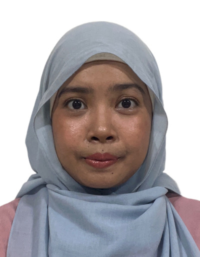

Nur 'Aliah

Singapore | aliah09@hotmail.com | www.linkedin.com/in/nur-aliah-dafir
Summary
Passionate and dedicated professional with a diverse background in education and pharmacy. Now seeking to transition into a role in software engineering. Adept at leveraging problem-solving skills acquired through teaching and pharmacy. Detail-oriented, ready to learn and eager to apply new knowledge in real world projects.
Work Experience
Ministry of Education (MOE), Bedok Green Primary School (Apr 2021 – Present)
General Education Officer
- Developed and implemented engaging lesson plans in English and Mathematics with differentiated instruction tailored to meet the diverse learning styles and abilities of students.
- Utilized technology and multimedia resources such as Nearpod, Epic, Matholia and Kahoot to enhance classroom instruction and student engagement.
- Led discussions for and prepared level resources as a Mathematics and Character and Citizenship Education Representative for the Primary 1 level teachers
- Single-handedly revised the curriculum and resources for the Programme for Active Learning (PAL) (Dance) to align with Enhanced 21st Century Competencies Framework by MOE.
- Collaborated effectively with colleagues to organize and coordinate school-wide events, resulting in the receipt of MOE’s Outstanding Contribution Award for ‘Be Yourself Day’ and a collaboration with St. Teresa’s R.C Primary School (London)
- Completed specialized training by MOE and implemented the School-based Dyslexia Remediation (SDR) Programme to enhance literacy skills for students with dyslexia
National University Hospital (NUH) (Jun 2017 – Jun 2019)
Pharmacist
- Dispensed medication and provided patient counselling on medication usage, potential side effects, and adherence to prescribed regimens.
- Conducted medication reconciliation to identify and resolve any discrepancies in patient’s medication profiles.
- Collaborated with healthcare professionals to review and adjust prescription orders to optimize the safety and suitability of drug-use in disease management.
- Utilized problem-solving and effective interpersonal skills to address the varied requests and needs of patients from diverse backgrounds
- Managed drug inventory, monitored expiration dates, and ensured compliance with storage and handling procedures for Controlled Drugs in clinics
- Represented NUH at the Pharmacy Congress 2018 by presenting my research poster titled “Epidemiology and Risk Factors Associated with Developing Multi-drug Resistant Bacterial Infections in Liver Transplant Recipients”
Certification
Singapore Pharmacy Council Practicing Certificate (Jan 2019 – Present)
Education
- National Institute of Education, Singapore (Jan 2020 – Mar 2021)
Postgraduate Diploma in Education
- National University of Singapore (NUS), Singapore (Aug 2013 – Jun 2017)
Bachelor of Science (Pharmacy), Honours | CAP: 4.24/5.0 [Honours (Distinction)]
Others